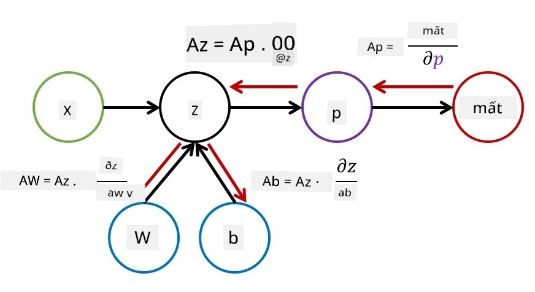

Giới thiệu về Mạng nơ-ron. Perceptron Đa Tầng
Trong phần trước, bạn đã tìm hiểu về mô hình mạng nơ-ron đơn giản nhất - perceptron một tầng, một mô hình phân loại hai lớp tuyến tính.
Trong phần này, mở rộng mô hình này thành một khung linh hoạt hơn, cho phép chúng ta:
- thực hiện phân loại đa lớp ngoài phân loại hai lớp
- giải quyết bài toán hồi quy ngoài phân loại
- phân tách các lớp không thể phân tách tuyến tính
sẽ phát triển một khung mô-đun riêng trong Python, cho phép xây dựng các kiến trúc mạng nơ-ron khác nhau.
Câu hỏi trước bài giảng
Formal hóa Học Máy
Hãy bắt đầu bằng cách formal hóa bài toán Học Máy. Giả sử chúng ta có một tập dữ liệu huấn luyện X với nhãn Y, và cần xây dựng một mô hình f để đưa ra dự đoán chính xác nhất. Chất lượng của dự đoán được đo lường bằng Hàm mất mát ℒ. Các hàm mất mát thường được sử dụng bao gồm:
- Đối với bài toán hồi quy, khi cần dự đoán một con số, sử dụng lỗi tuyệt đối ∑i|f(x(i))-y(i)|, hoặc lỗi bình phương ∑i(f(x(i))-y(i))2
- Đối với phân loại, mất mát 0-1 (về cơ bản giống với độ chính xác của mô hình), hoặc mất mát logistic.
Đối với perceptron một tầng, hàm f được định nghĩa là một hàm tuyến tính f(x)=wx+b (ở đây w là ma trận trọng số, x là vector các đặc trưng đầu vào, và b là vector độ lệch). Đối với các kiến trúc mạng nơ-ron khác nhau, hàm này có thể có dạng phức tạp hơn.
Trong trường hợp phân loại, thường mong muốn đầu ra của mạng là xác suất của các lớp tương ứng. Để chuyển đổi các số bất kỳ thành xác suất (ví dụ: để chuẩn hóa đầu ra), thường sử dụng hàm softmax σ, và hàm f trở thành f(x)=σ(wx+b)
Trong định nghĩa của f ở trên, w và b được gọi là tham số θ=⟨w,b⟩. Với tập dữ liệu ⟨X,Y⟩, tính toán lỗi tổng thể trên toàn bộ tập dữ liệu dưới dạng một hàm của tham số θ.
✅ Mục tiêu của việc huấn luyện mạng nơ-ron là giảm thiểu lỗi bằng cách thay đổi tham số θ
Tối ưu hóa Gradient Descent
Có một phương pháp tối ưu hóa hàm nổi tiếng gọi là gradient descent. Ý tưởng là tính đạo hàm (trong trường hợp đa chiều gọi là gradient) của hàm mất mát đối với các tham số, và thay đổi tham số sao cho lỗi giảm đi. Điều này có thể được formal hóa như sau:
- Khởi tạo tham số bằng một số giá trị ngẫu nhiên w(0), b(0)
- Lặp lại bước sau nhiều lần:
- w(i+1) = w(i)-η∂ℒ/∂w
- b(i+1) = b(i)-η∂ℒ/∂b
Trong quá trình huấn luyện, các bước tối ưu hóa được tính toán dựa trên toàn bộ tập dữ liệu (nhớ rằng hàm mất mát được tính bằng tổng qua tất cả các mẫu huấn luyện). Tuy nhiên, trong thực tế, lấy các phần nhỏ của tập dữ liệu gọi là minibatches, và tính toán gradient dựa trên một tập con của dữ liệu. Vì tập con được lấy ngẫu nhiên mỗi lần, phương pháp này được gọi là stochastic gradient descent (SGD).
Perceptron Đa Tầng và Backpropagation
Mạng một tầng, như thấy ở trên, có khả năng phân loại các lớp có thể phân tách tuyến tính. Để xây dựng một mô hình phong phú hơn, kết hợp nhiều tầng của mạng. Về mặt toán học, điều này có nghĩa là hàm f sẽ có dạng phức tạp hơn và được tính toán qua nhiều bước: * z1=w1x+b1 * z2=w2α(z1)+b2 * f = σ(z2)
Ở đây, α là một hàm kích hoạt phi tuyến, σ là hàm softmax, và tham số θ=<w1,b1,w2,b2>.
Thuật toán gradient descent vẫn giữ nguyên, nhưng việc tính toán gradient sẽ khó khăn hơn. Dựa vào quy tắc đạo hàm chuỗi, tính đạo hàm như sau:
- ∂ℒ/∂w2 = (∂ℒ/∂σ)(∂σ/∂z2)(∂z2/∂w2)
- ∂ℒ/∂w1 = (∂ℒ/∂σ)(∂σ/∂z2)(∂z2/∂α)(∂α/∂z1)(∂z1/∂w1)
✅ Quy tắc đạo hàm chuỗi được sử dụng để tính đạo hàm của hàm mất mát đối với các tham số.
Lưu ý rằng phần bên trái nhất của tất cả các biểu thức này là giống nhau, và do đó tính toán hiệu quả các đạo hàm bắt đầu từ hàm mất mát và đi “ngược lại” qua đồ thị tính toán. Vì vậy, phương pháp huấn luyện perceptron đa tầng được gọi là backpropagation, hay 'backprop'.

TODO: trích dẫn hình ảnh
✅ tìm hiểu backprop chi tiết hơn trong ví dụ notebook của chúng ta.
Kết luận
Trong bài học này, xây dựng thư viện mạng nơ-ron của riêng mình và sử dụng nó cho một bài toán phân loại hai chiều đơn giản.
🚀 Thử thách
Trong notebook đi kèm, bạn sẽ triển khai khung của riêng mình để xây dựng và huấn luyện perceptron đa tầng. Bạn sẽ có cơ hội tìm hiểu chi tiết cách các mạng nơ-ron hiện đại hoạt động.
Hãy tiếp tục với notebook OwnFramework và làm việc qua nó.
Câu hỏi sau bài giảng
Ôn tập & Tự học
Backpropagation là một thuật toán phổ biến được sử dụng trong AI và ML, đáng để nghiên cứu chi tiết hơn
Bài tập
Trong bài thực hành này, bạn được yêu cầu sử dụng khung mà bạn đã xây dựng trong bài học này để giải bài toán phân loại chữ số viết tay MNIST.